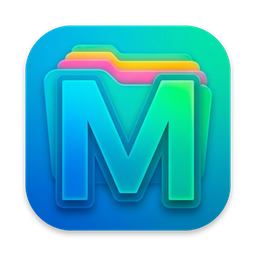
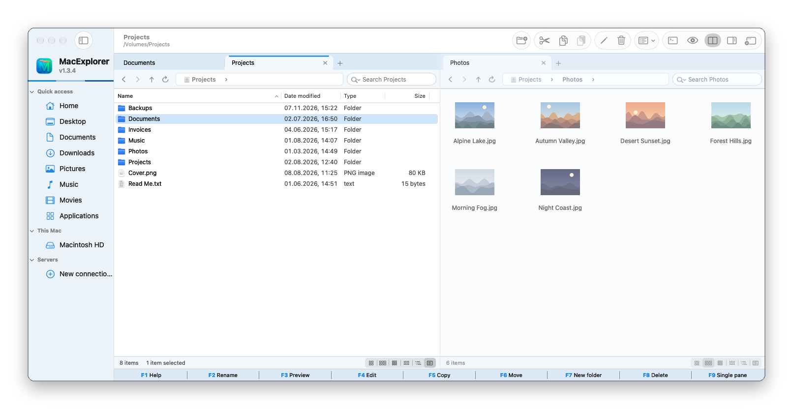
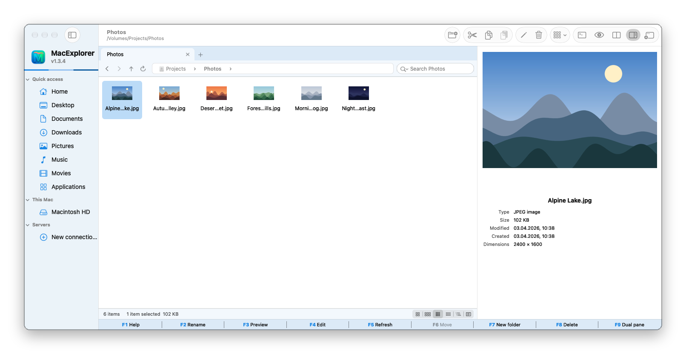
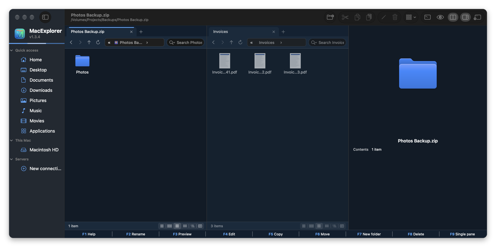

MacExplorer
Windows Gezgini tarzı dosya yöneticisi
MacExplorer, macOS için ücretsiz ve açık kaynak, Windows Gezgini tarzı bir dosya yöneticisidir: sekmeler, çift panel, gerçek Kes ve Yapıştır, önizleme bölmesi ve pencerenin içinde SFTP ile FTP.
Mac'te Windows Gezgini'ni arayanlar için Finder, Path Finder, ForkLift ve Commander One'a ücretsiz bir alternatif.
MacExplorer'ı macOS için indir (zip)
Ayrıntılı belgeler · Tüm sürümler · Kaynak kod: GitLab · GitHub
Özellikler
- Her panelde sekmeler ve çift panel (F9); sekmeler paneller ve pencereler arasında taşınır
- Gezgin'deki gibi adımlı adres çubuğu, Windows sütun ve menü adları
- Finder panosuyla da çalışan gerçek Kes, Kopyala ve Yapıştır
- İlerleme penceresi, Değiştir / Atla / İkisini de sakla ve tüm dosya işlemleri için Geri Al / Yinele
- Küçük resimli Simge, Liste ve Ayrıntılar görünümleri, önizleme bölmesi (Alt+P) ve Hızlı Bakış
- Alt klasörleri de arka planda tarayan arama
- Panelde SFTP, FTP, FTPES ve FTPS; disk olarak bağlanan SMB, WebDAV, AFP ve NFS
- ZIP, RAR, 7Z ve TAR arşivlerinde klasör gibi gezinme; ISO ve DMG bağlama ve oluşturma
- Varsayılan olarak Windows klavye davranışı, isteğe bağlı Mac davranışı; işlev tuşu çubuğu
- Ücretsiz MacNote++ düzenleyiciyle çalışır: F4 dosyaları onunla düzenler, F3 salt okunur açabilir
- Açık ve koyu renkli 14 tema; GitLab'dan kendini günceller
Ekran görüntüleri



Sık sorulan sorular
MacExplorer ücretsiz mi?
Evet. MacExplorer, GPL-3.0 lisansıyla ücretsiz ve açık kaynaktır; reklam, hesap ya da uygulama içi satın alma yoktur.
Mac için Windows Gezgini var mı?
Microsoft yapmıyor. MacExplorer aynı çalışma biçimini macOS'a getirir: sekmeler, adımlı adres çubuğu, Windows menü adları, Kes ve Yapıştır, Windows klavye davranışı.
Mac'te dosya kesip yapıştırabilir miyim?
Evet. MacExplorer'da Ctrl+X ya da ⌘X dosyaları keser, Ctrl+V ya da ⌘V taşır. Kesilen öğeler yapıştırılana kadar soluk görünür.
Finder'ın yerini alıyor mu?
Hayır, Finder'ın yanında çalışır. macOS başka bir uygulamanın varsayılan dosya görüntüleyici olmasına güvenilir biçimde izin vermiyor; bu yüzden başka uygulamalardan açılan klasörler yine Finder'a gider.
SFTP ve FTP sunucularına bağlanabilir mi?
Evet. SFTP, FTP, FTPES ve FTPS panelde açılır; SMB, WebDAV, AFP ve NFS disk olarak bağlanır. ⌘K ile bağlanın.
Parolalarım nerede saklanıyor?
Yalnızca macOS Anahtar Zinciri'nde ve yalnızca kaydetmeyi seçerseniz.
Hangi Mac'lerde çalışır?
macOS 15 Sequoia veya üstü yüklü Apple Silicon ve Intel Mac'lerde.
macOS neden ilk seferde engelliyor?
MacExplorer, ücretli geliştirici hesabı gerektiren Apple onayından (notarization) geçmemiştir. Sistem Ayarları ▸ Gizlilik ve Güvenlik ▸ Yine de Aç ile bir kez izin verin; ayrıntılar İndirme ve kurulum bölümünde.
Finder, Path Finder, ForkLift, Commander One ve Windows Gezgini yalnızca karşılaştırma için anılmıştır; MacExplorer'ın bunlarla, Apple ya da Microsoft ile bir bağı yoktur.
Kurmadan önce
Uygulamalar Apple onayından (notarization) geçmedi; bunun için ücretli geliştirici hesabı gerekiyor. Bu yüzden macOS ilk açılışta engeller. Her uygulamaya Sistem Ayarları ▸ Gizlilik ve Güvenlik ▸ Yine de Aç ile bir kez izin verin. Her sürümde SHA-256 değeri yayımlanır.